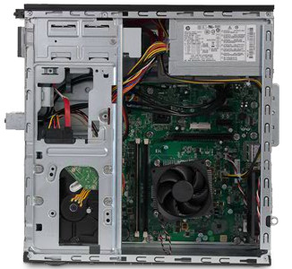
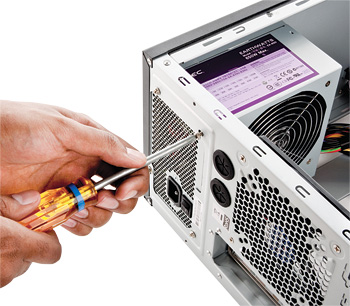
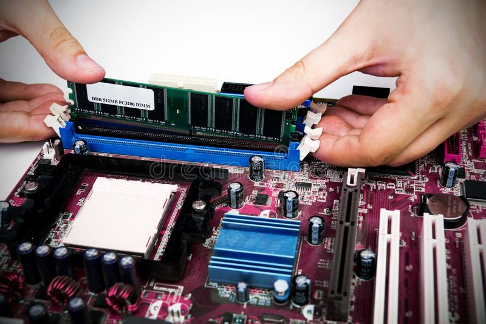
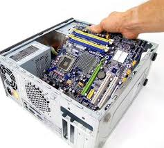
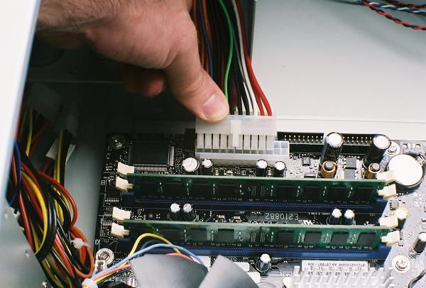
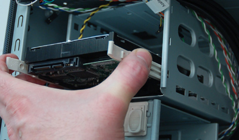
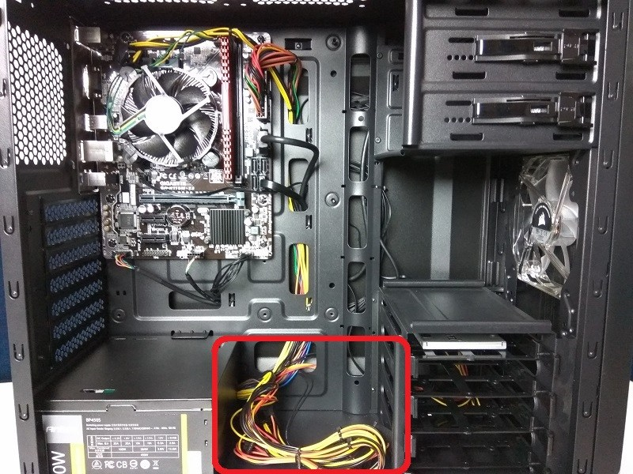
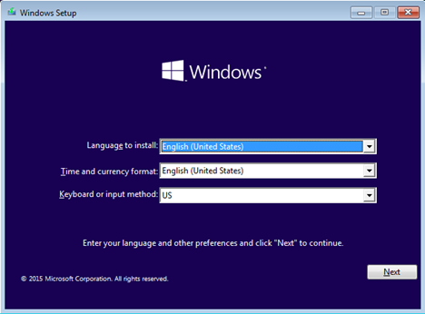

Assembling a PC:
1. Prepare and Embrace yourself:
Before said get an Antistatic wrist-strap as it prevents you and the PC components from getting electrocuted. (optional) If you could find a magnetic screw dish make it available as it can save a lot of time when finding screws while assembling.
2.Opening a case: 
Unscrew the side panels to create more working space and keep the side panels aside.
3.Installing a Power supply:
As said in the prerequisite, many cases come with pre-installed power supply. If your PC doesn’t come with it then don’t worry!! We got you covered. First take out the power supply and align the fans of the power supply toward the vents of the case (if there are two fans then align one fan to vents and other towards the inner components. If you are unable to find where to mount the power supply many cases give instructions as to place it at the top.
3.Installation of motherboard and addition of components:
First before mounting the motherboard to the case, you need to add components like Processor, RAM cards, Wi-Fi card and also locate all the ports like usb ports, SATA port for connecting hard drive (it should be done in later part of your building). First take processor and locate triangle on it, then locate the same triangle on the processor socket on the motherboard and align them. Then gently place the processor on the socket such that it doesn’t get damaged then give a slight wiggle and lower the lever to lock the socket. Find the RAM dims on the motherboard, then take the RAM cards and match the dims according to the design of the dim. Open the lock of the dim and place the RAM card into it. After placing, close the lock. If you have two RAM cards then place them in the order of 1st dim and 3rd dim or 2nd dim and 4th dim. This is because the computer understands as odds and evens.
After RAM cards, take the cooler provided by the CPU vendor and place very carefully on the processor. As many coolers or heat sink come with pre-applied thermal paste, you can place it directly. Then wind the heat sink wire around it and connect it to the port named as cooler. If you have a Wi-Fi card then find the m.2 Wi-Fi port then insert the card carefully into it and screw it.
4.Installing motherboard:
After adding all components to motherboard, align the motherboard to the case in a way that the heat sink is facing up wards and all the holes match. Then screw them to the standoff which you need to place earlier so the motherboard doesn’t move. Check even the ports are facing the I/O back shield. This process is called securing the motherboard. Place the shield given in the motherboard box to the back of the case where the ports are visible. This shield helps in the protection of ports and prevention of dust into the case.
5. Connecting the wires:
There are some wires which need to be connected from case to motherboard. You need to connect the USB ports, the Power and Reset switches, the LED power and hard drive lights, and the audio cable. Your motherboard’s documentation will show you where on your motherboard these connectors attach. As the connecters are fragile work slowly and steadily.
6. Installing a Hard drive:
Depending on the type of case you have chosen, the hard drive has its bay when you remove the front panel. For installing an optical drive also, it requires to open front panel. First, insert the hard drive into its slot and tighten the screw into the hard drive bracket holder. Plug the hard drive's SATA cable into the SATA slot on the motherboard. For installing the graphic card find the biggest dim on the motherboard named as “graphic card”. Then do the same procedure of RAM card.
7. Connecting the power supply wires to the motherboard components:
If you haven't already connected the power supply to components which need power, make sure that it is connected to the following locations: 1.Motherboard 2.Graphic card 3.Hard drive
8. Completion of PC Assembly:
After connecting the wires, do a final evaluation of no wires are interfering with each other and all the connections are made right. Then take the side panel and cover the side of the case and screw them.
Installing an Operating system:
1. Connecting the PC to a power source:
Find a power source and plug in the PC charging adapter into an outlet. Plug a monitor to the PC by using a VGA or HDMI cable.
Press the computer's Power button on the front or back of the case. If everything's properly connected, your computer should start up. If you encounter issues during the startup process—or if your computer fails to start—disconnect it from the power source, re-open the case, and check the connections again.
Installing a software:
You can install windows or Linux on to your computer. Windows can be run on many types of configurations but it requires a product key to activate it. You can buy this software at local PC shops or online retailers. If you don’t want to spend money on it and have flash drive then make a bootable usb by downloading an ISO file of windows, then using windows media creation tool you can make a bootable usb. After creating boot into BIOS of the PC and select bootable usb as the booting option. Then the setup of windows comes in. the procedure is same for Linux too. Once you have installed your choice of O.S go to net and install all the necessary drivers for your PC. Generally, the manufactures bundle disc which install drivers with their respective components. If you install modern version of windows and Linux it automatically installs all the necessary drivers when connected to the internet.
By the end of this article you could build a PC of your choice with ease.